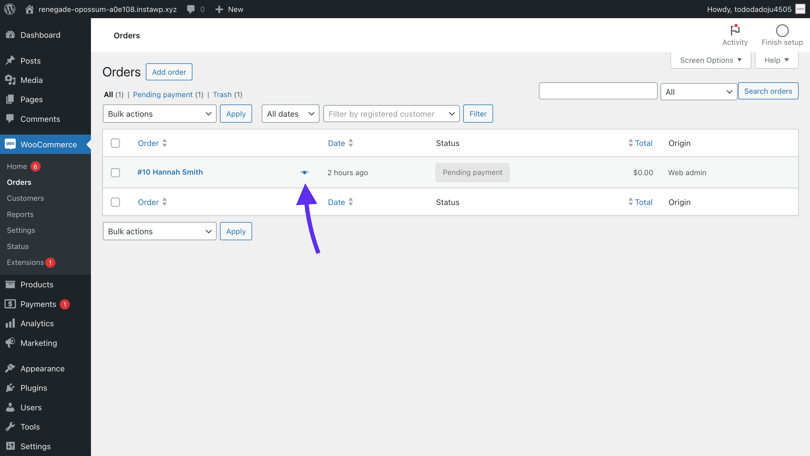
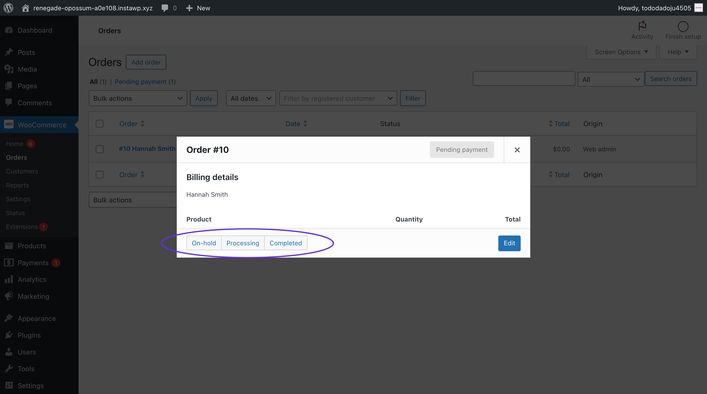
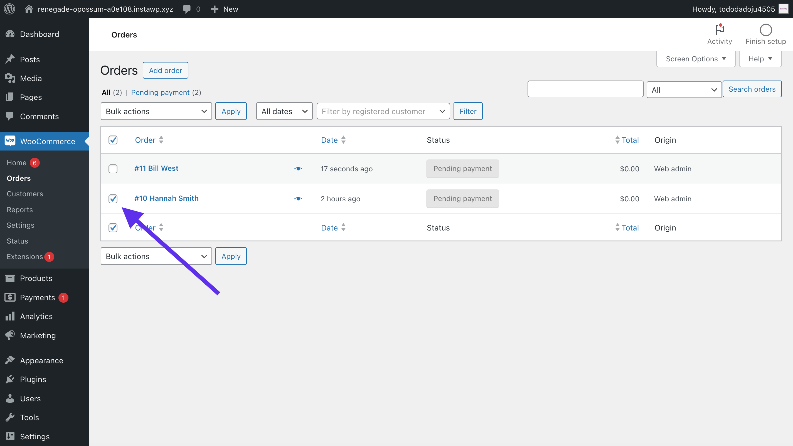
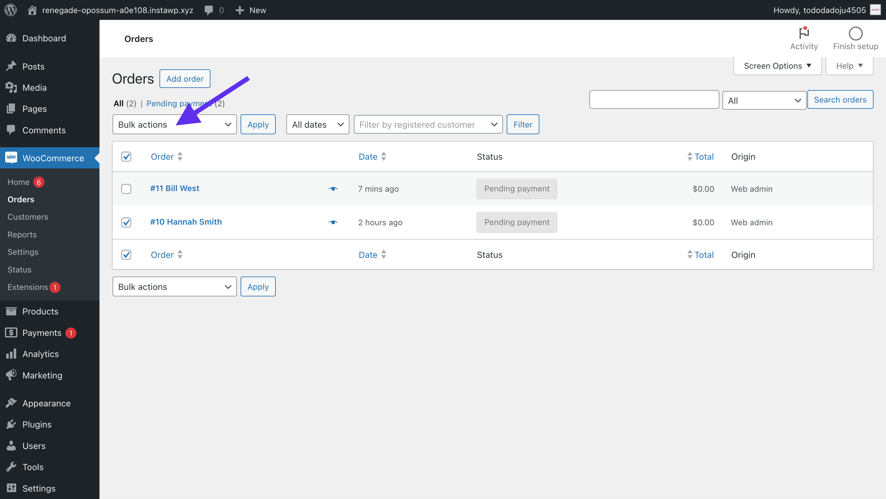
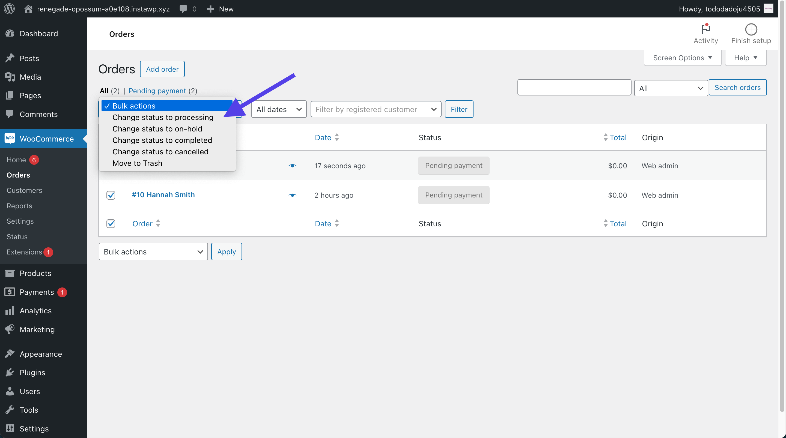
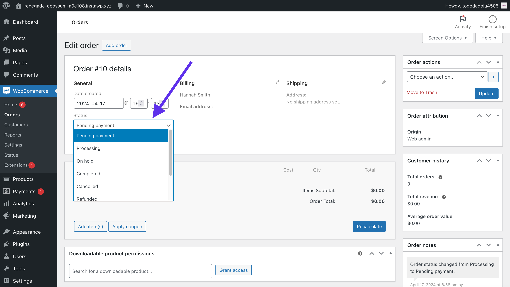

How to change order status in WooCommerce (for beginners, no extra plugins)
Published on by John Jago
Summary
This is a simple, easy-to-follow guide on all the ways you, as a merchant, can manually change the order status of an order in WooCommerce. This guide doesn’t require you to download any plugins or write any code. We show how to change the order status in a standard WooCommerce install.
In this guide, you’ll learn how to:
Change order status from the order list
Using the order preview
Each order in the order list has an eye icon next to the name on the order, that when clicked, opens a preview of the order details. Here you can change the order status with a single click. What order statuses are available depends on the current status of the order.
 If you don’t see the order status you wish to change the order to, you can always click Edit and change the order status from there.
Using bulk actions
Another option for changing the status of a single or multiple orders is to check the boxes next to the orders you wish to change. Then, click Bulk actions and select the order status to change all the selected orders to.
  Change order status from the order edit view
If you click into an order from the order list, you’ll go into the order edit view. From the order details area, you can change the status using the dropdown under the label Status.
Conclusion
These are the three ways to manually change an order’s status in WooCommerce.
Thanks for reading! 🎉
By the way, do you want to improve the look and productivity of WooCommerce when managing orders?
Learn about Dashify